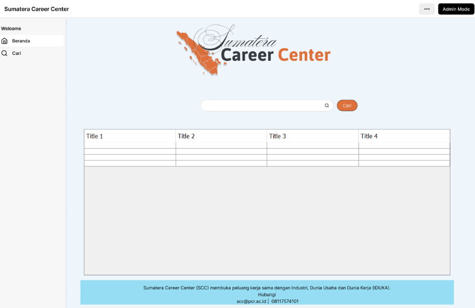

Karya/Sumatera Career Center
Sumatera Career Center
Papan lowongan kerja untuk wilayah Sumatera, dibangun sebagai aplikasi desktop Java. Pencari kerja mencari dan melamar; perusahaan mengunggah lowongan beserta berkas legalitasnya.
- Tahun
- 2025
- Platform
- Desktop
- Tumpukan
- Java · XML UI · Material
- Data
- SQLite / MySQL


Masalahnya
Informasi lowongan di daerah sering tersebar di grup pesan dan pengumuman kampus. Tidak ada satu tempat yang memisahkan lowongan sah dari yang tidak, dan tidak ada cara bagi perusahaan untuk menunjukkan bahwa mereka benar-benar perusahaan.
Yang dibangun
- Login dan registrasi dengan validasi data, memisahkan akun pencari kerja dan perusahaan.
- Beranda berisi ringkasan informasi dan akses cepat ke fitur utama.
- Daftar lowongan dengan detail posisi, perusahaan, dan kualifikasi.
- Formulir unggah lowongan bagi perusahaan.
- Unggah berkas perusahaan sebagai bukti legalitas pemberi lowongan.
- Alur admin untuk memeriksa dan mengelola data.
Keputusan teknis
Java desktop, bukan web. Proyek ini tugas mata kuliah pemrograman berorientasi objek; lingkungan yang dinilai adalah aplikasi desktop dengan antarmuka XML. Batasan itu dijadikan dasar, bukan diakali.
SQLite saat pengembangan, MySQL saat dipakai bersama. SQLite membuat aplikasi bisa dijalankan tanpa memasang server basis data lebih dulu, sementara MySQL dipakai ketika data perlu diakses beberapa pengguna sekaligus.
Berkas legalitas sebagai bagian dari alur. Setiap lowongan terhubung ke berkas perusahaan yang mengunggahnya. Ini bukan fitur tambahan — ini yang membedakan papan lowongan dari daftar tautan.
Yang saya pelajari
Memisahkan peran pengguna mengubah desain setiap layar. Satu form unggah lowongan harus tahu siapa yang sedang masuk, dan apa yang boleh ia lihat. Menegakkan aturan itu di lapisan data ternyata lebih tahan lama daripada menyembunyikan tombol.